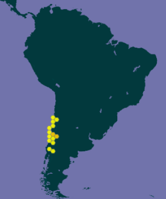

Ficha Técnica: Trydarssus nobilitatus
Clasificación Científica
| Categoría Taxonómica | Valor |
|---|---|
| Reino | Animalia |
| Filo | Arthropoda |
| Clase | Arachnida |
| Orden | Araneae |
| Familia | Salticidae |
| Género | Trydarssus (Galiano, 1995) |
| Especie | Trydarssus nobilitatus (Nicolet, 1849) |
 Descripción del macho:
El macho posee un cefalotorax pardo oscuro cubierto de pelos pardos con reflejos rojizos, salvo escasos pelos blancos en el margen anterior y delante de los ojos laterales posteriores, ademas de la region cefalica negruzca y una franja media longitudinal cubierta de pelos blancos que va desde la estría torácica hasta el margen posterior. El abdomen es delgado y esta cubierto de finos pelos pardo oscuro con manchitas claras; este posee una franja central blanca y estrecha que lo atraviesa desde arriba hasta abajo y que se adelgaza en el tercio apical donde forma tres pares de pequeñas dilataciones laterales. Los lados y la parte ventral del abdomen son amarillentos con manchitas pardas, las hileras son pardas con puntos negros dorsales y sus patas son pardas con abundantes pelos blancos. En su rostro encontramos un clipeo marrón claro con fleco plomo y unos queliceros verticales tendiendo a geniculados, de color naranja.
Descripción del macho:
El macho posee un cefalotorax pardo oscuro cubierto de pelos pardos con reflejos rojizos, salvo escasos pelos blancos en el margen anterior y delante de los ojos laterales posteriores, ademas de la region cefalica negruzca y una franja media longitudinal cubierta de pelos blancos que va desde la estría torácica hasta el margen posterior. El abdomen es delgado y esta cubierto de finos pelos pardo oscuro con manchitas claras; este posee una franja central blanca y estrecha que lo atraviesa desde arriba hasta abajo y que se adelgaza en el tercio apical donde forma tres pares de pequeñas dilataciones laterales. Los lados y la parte ventral del abdomen son amarillentos con manchitas pardas, las hileras son pardas con puntos negros dorsales y sus patas son pardas con abundantes pelos blancos. En su rostro encontramos un clipeo marrón claro con fleco plomo y unos queliceros verticales tendiendo a geniculados, de color naranja.
Descripción de la hembra:
La hembra posee un cefalotorax pardo oscuro cubierto con pelos blancos poco densos y anchas franjas marginales pardo claro, ademas de una franja media longitudinal de pelos blancos, que va desde el margen anterior de la region cefalica hasta el margen posterior de la region toraxica. Desde cada ojo lateral anterior hasta el ojo lateral posterior posee una franja de pelos blancos poco densos. El abdomen es de color pardo oscuro y posee una franja media longitudinal cubierta por pelos blancos que esta bordeada de cada lado por una angosta línea de pelos rojizos. Los lados del abdomen son pardo amarillentos con manchitas pardas. En su rostro vemos quelíceros pardo rojizos, con largos pelos blancos abundantes. Las patas son pardas con abundantes y largos pelos blancos.
Tanto la hembra como el macho pueden presentar variacion en su color y fragmentacion de la franja central del abdomen.
Habitat

Alimentacion Aunque, por lo general, las arañas saltarinas son carnívoras, se sabe que muchas especies se alimentan también de néctar y, una especie, la Bagheera kiplingi, se alimenta principalmente de materia vegetal. No se conoce ninguna que se alimente de semillas ni de fruta. Plantas como la Chamaecrista fasciculata proporcionan néctar a las arañas saltarinas y, a cambio, se benefician de la caza de las arañas sobre cualquier plaga que encuentren. La hembra de la especie del Sudeste Asiático Toxeus magnus, alimenta a sus crías durante sus primeros 40 días de vida con un líquido nutritivo parecido a la leche. A las crías hembras también se les permite consumir algo de este líquido después de alcanzar la madurez sexual.
Cortejo y Apareamiento
 Las arañas saltarinas realizan complejas exhibiciones visuales de cortejo, usando tanto movimientos como atributos corporales físicos. A diferencia de las hembras, los machos tienen el pelo plumoso, colorido o iridiscente, flecos en las patas delanteras, estructuras en otras patas, y otras modificaciones, a menudo extrañas. Estas características se usan en un “baile” de cortejo, en el que se muestran las partes coloreadas o iridiscentes del cuerpo. Además de la exhibición de colores, las arañas saltarinas realizan complejos movimientos de desplazamiento, vibración o zigzag para atraer a las hembras. Se ha descubierto hace poco que muchos machos poseen también señales auditivas que se parecen a zumbidos o tambores. Las características visuales y vibratorias varían mucho de una a otra especie. Los machos adultos de muchas especies tienen parches que reflejan la radiación ultravioleta. Esta característica visual la usan algunas hembras para elegir pareja.
Si la hembra es receptiva al macho, asumirá una postura pasiva y agachada. En algunas especies, la hembra puede que también haga vibrar sus palpos o abdomen. El macho extenderá entonces sus patas delanteras hacia la hembra para tocarla. Si la hembra sigue siendo receptiva, el macho subirá a su espalda y la inseminará con sus palpos.
Las arañas saltarinas realizan complejas exhibiciones visuales de cortejo, usando tanto movimientos como atributos corporales físicos. A diferencia de las hembras, los machos tienen el pelo plumoso, colorido o iridiscente, flecos en las patas delanteras, estructuras en otras patas, y otras modificaciones, a menudo extrañas. Estas características se usan en un “baile” de cortejo, en el que se muestran las partes coloreadas o iridiscentes del cuerpo. Además de la exhibición de colores, las arañas saltarinas realizan complejos movimientos de desplazamiento, vibración o zigzag para atraer a las hembras. Se ha descubierto hace poco que muchos machos poseen también señales auditivas que se parecen a zumbidos o tambores. Las características visuales y vibratorias varían mucho de una a otra especie. Los machos adultos de muchas especies tienen parches que reflejan la radiación ultravioleta. Esta característica visual la usan algunas hembras para elegir pareja.
Si la hembra es receptiva al macho, asumirá una postura pasiva y agachada. En algunas especies, la hembra puede que también haga vibrar sus palpos o abdomen. El macho extenderá entonces sus patas delanteras hacia la hembra para tocarla. Si la hembra sigue siendo receptiva, el macho subirá a su espalda y la inseminará con sus palpos.
Estado de conservacion Las arañas saltarinas, al ser un grupo tan diverso y extendido, no son evaluadas individualmente en cuanto a su estado de conservación en la Lista Roja de la UICN. Sin embargo, al igual que muchos otros artrópodos, pueden enfrentar amenazas como la pérdida de hábitat, el uso de pesticidas y el cambio climático. La destrucción y fragmentación del hábitat debido a las actividades humanas pueden impactar negativamente en sus poblaciones al reducir las presas disponibles y los entornos adecuados. Los esfuerzos de conservación centrados en preservar ecosistemas diversos y minimizar las perturbaciones antropogénicas son cruciales para salvaguardar a las arañas saltarinas y otras especies de artrópodos. Además, promover la conciencia pública y el aprecio por la importancia ecológica de los arácnidos puede ayudar a fomentar iniciativas de conservación destinadas a proteger sus hábitats y garantizar su supervivencia a largo plazo